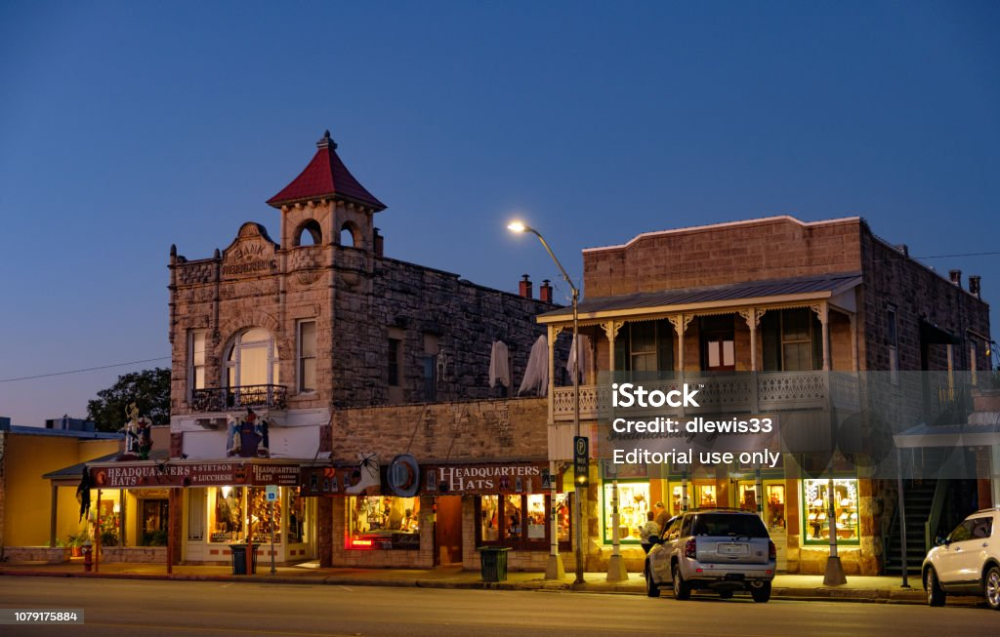

City Overview
Fredericksburg is known for its German heritage, wineries, and picturesque landscapes in the Texas Hill Country.
City Details
- Population: ~11,500
- Year Incorporated: 1846
- Region: Central Texas (Hill Country)
- Classification: Rural
- Average Income Level: $57,474. Comparable to state average